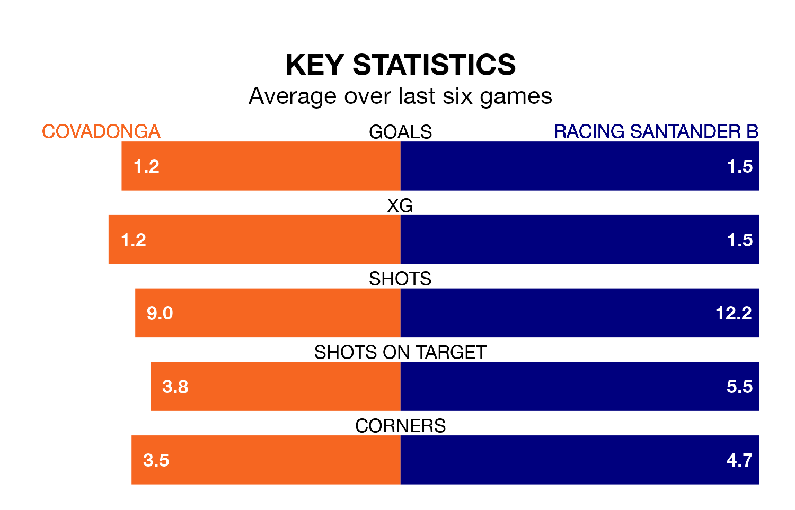

Racing Santander B travel to Covadonga on early Sunday in the Segunda División RFEF Group 1.
The visitors come into the game on the back of a defeat in their last match, having lost to Arandina CF 4-2 at home, with a goal from Daniel González García.
Covadonga also lost their last match, 3-1 against Real Avilés, with their goal scored by Samuel Perez Pradales.
Covadonga are bottom of the table after 32 games, of which they have won seven and drawn eight, earning 29 points.
Racing Santander B are 12 places ahead of the hosts in sixth, with 11 wins and 12 draws putting them on 45 points.
With 45 goals in 32 games so far this season, the away team are the league's third-highest scorers with 1.4 goals per game. And they are conceding at an average rate, letting in 40 goals at a rate of 1.2 per game.
Covadonga, meanwhile, are below average scorers, with 1.1 goals per game, compared to a league average of 1.2. They have conceded 1.7 goals per game.
Covadonga are in disappointing form in the Segunda División RFEF Group 1, with two wins and four losses from their last six games.
With two wins and three draws over that period, Racing Santander B's form is better – they have taken nine points from 18, compared to the home side's six.
Updated: 07:59 (UTC), 26/04/24